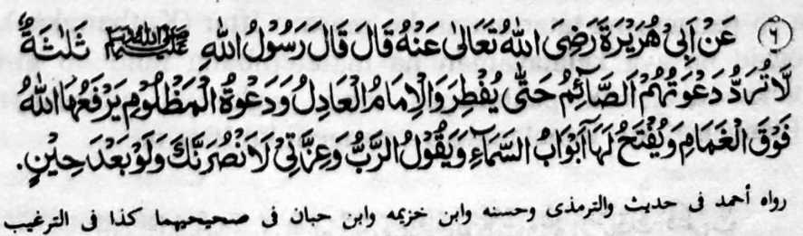

Hadith - 6

Miyakathitayan ko Abu Hurairah (Radhiallaho Anho) a pitharo iyan a pitharo o Rasulollah (Sallallaho Alaihi Wasallam). “Telo [a tao] a di khikasoy so pangeni ran [ka tatarima-an]: so barapowasa taman ko kathangkas iyan; so maontol a dato: go so pangeni o kasasalimbotan a pakiporo o Allah (Subhaanaho Wa Ta'ala) so pangeni niyan ko liyawaw o gabon, go leka-an Niyan non so manga pinto o langit, go tharo-on o Kadenan. 'Ibet ko Kabager Aken ka thabangan Aken seka den apiya baden mata-alik.’"
OSAYAN:
Si-i ko [kitab a] ‘Durre Manthur’ na miyapanothol a pitharo o Aishah (Radhiallaho ‘Anha) a anda den-i kasoled o Ramadhan na masalin den so paras o Rasulollah (Sallallaho Alaihi Wasallam). Lalayon niyan den pethakepen so Sambayang iyan, go pekhitaralo pen so gi-i niyan kathapapay ko dowa-a niyan ago pekhasipaton a kapephagomareg o kalek iyan ko Allah (Subhaanaho Wa Ta'ala). Si-i ko isa a kiyapanothola on na marege-regen a kapephaka-iga iyan ko iga-an niyan taman sa mapos so Ramadhan. Liyo ro-o pen, na miya-aloy a so manga Mala-ikat a tomatanggong ko ‘Arsh na isosogo kiran igira Ramadhan a kitaregen niran ko manga ped a galebek iran sa aya bo a pezowa-an niran na giya gi-i ran katharo-a ko ‘Ameen’ [tarima-a Ngka] ko pangeni o siran a gi-i phowasa. Madakel den so manga Hadith a inaloy niyan a so manga pangeni o gi-i mamowasa na tatarima-an. Pabila inidiyandi o Allah (Subhaanaho Wa Ta’ala) ago piyanothol iyan reketano o Memamata-an a Nabi (Sallallaho ‘Alaihi Wasallam), na da den pen a sangka-an a atay ko kabebenar angka-iya a manga tothol. Ogaid na tanto a piyakamemesa a makim pen na-i, na aden pen a pekha-ilay tano a manga tao a lagid o marayag a di ran khakowa so pephangenin iran. Pephangeni siran na da a khakowa iran; ogaid na kena ba aya ma-ana ini na so manga pangeni ran na da tarima-a. Saboten tano sangka-iya a masa so rarad o dowa-a a tiyarima.
Piyakitokawan reketano o Rasulollah (Sallallaho ‘Alaihi Wasallam) a igira aden a piyangeni o sakatao a Muslim ko Allah (Subhaanaho Wa Ta’ala), asar ka kena ba so katolak sa tonganay o di na nganin a dosa, na matatangked a khakowa niyan so isa sangka-iya telo: [paganay ron na] khakowa niyan den so piyangeni niyan sa tarotop, o da a miyakowa angkoto [a pephangenin] na o di piyaki-angkat rekaniyan o Allah (Subhaanaho Wa Ta’ala) so manga reregen a khisagad iyan, o di na so balas a khakowa niyan na ro-o Niyan non inanayao sa Akhirat. Isa pen a Hadith a miyatharo iyan a amay ko Gawi-i a Kaphangokom, na na phakitalowan o Allah (Subhaanaho Wa Ta’ala) so oripen Niyan, na tharo-on Niyan non, “Hay oripen Aken! Inisogo Aken reka so kapamangeni ngka Raken go inidiyandi Aken so katharima-a Ko ron. Ba aden a miyapangeni ngka Raken?” So oripen na isembag iyan, “Oway aden!” Oriyan noto na isembagon o Allah (Subhaanaho Wa Ta’ala), “Da man a pangeni ngka a ba Ko da tarima-a. Miyapangeni ngka a kapakalidas ka ko tiyoba na piyapas Aken reka so tiyoba si-i pen ko katatago-o ka sa donya Miyapangeni ngka a mada reka so boko, ogaid na so onga angkoto a pangeni ngka na di ngka katawan. Sabap ro-o na sominggay Ako sa balas a bagi-an ka sa Akhirat. So Rasulollah (Sallallaho ‘Alaihi Wasallam) na pitharo iyan a giyangkoto a mama na pakitademan non so omani pangeni niyan go paki-ilay ron o anda manaya-i kiyatarima-aon si-i pen ko katatago iyan sa donya o di na antona-ai balas a ro-o ron ithitilagad sa Akhirat. So den so kailaya niyan sangka-iya a balas, na mandingan-dingan niyan a o ba bo da den a minibegay ron sa donya ka an aden mabonayon a si-i niyan miyakowa so tarotop a balas sa Akhirat.
Oway, so pangeni na tanto a mala-i gona, sa so kindarainonen non ko apiya antona-a masa na mala a kalapis.. Apiya aya kapekha-ilaya on na lagid o ba da tarima-a so pangeni tano, na di khapakay o ba mada so panginam. Apiya si-i sangkanan a matas a Hadith sa kaposan angka-iya a dapetar na marayag a so Allah (Subhaanaho Wa Ta'ala) na si-i ko kapetharima-a Niyan ko manga pangeni na phagilain Niyan da-an so kamapiya-an tano. O mailay o Allah (Subhaanaho Wa Ta’ala) a so katarima-a Niyan ko pangeni tano na kamapiya-an tano na ibegay Niyan, o di na di Niyan ibegay [amay ka phakabinasa reketano]. Aya mata-an na limo reketano o Allah (Subhaanaho Wa Ta’ala) a di tano lalayon khakowa so manga pangeni tano, sabap sa si-i ko kaito tano-i sabot na pephamangeni tano sa manga nganin a di reketano phakanggay a gona sangkoto a masa.
Si-i, na mbangkiringen aken so inengka iyo ko titho a maola-ola a so manga mama ago so pen so manga babay na kapapadaleman siran sa marata a ola-ola a misabap sa rarangit ago kasasakit na ipephamaninta iran so manga wata iran. Pananggila-i niyo angka-i. Sabap sa inidiyandi o Allah (Subhaanaho Wa Ta’ala), na aden a manga masa a tanto a maga-an a katatarima-aon ko pangeni. Giyoto-i pekhasalak a misabap ko kalalalongan tano, na so wata na pekhamoreka-an na amay ka so rarad o paninta na minisogat ko wata na miyatago sekaniyan ko kamaregenan na penggora-ok bo so lokes ago gi-i ndidiyagao. So Rasulollah (Sallallaho ‘Alaihi Wasallam) na inisapar iyan reketano o ba tano pamaninta-an so manga ginawa tano, so manga wata tano, so manga pagigimo tano, o di na so manga talasogo-ay tano. Khapakay a so paninta na miyatharo ko masa a so langon o pangeni na tatarima-an, balabao ron igira Ramadhan, a mapepeno a ‘Mustahab” [itatarima] a manga masa. Giyoto-i sabap, a si-i sangka-iya a olan-olan, na tanto a makaphananggila so tao.
Miyapanothol o Ibn Mas’ood (Radhiallaho ‘Anho) a oman gagawi-i ko Ramadhan, na aden a pephananalo ko manga langit a gi-i niyan tharo-on: “Hay sekano a gi-i mangiloba ko mapiya, na obay kano; Hay sekano a gi-i mangiloba ko marata, na awa kano [ko marata] na inengka kano.” Oriyan noto na so Mala-ikat na itawag iyan peman, “Ba aden a pephamangeni sa ma-ap ka aden kama-api? Ba aden a isa bo a aden a phangenin niyan ka aden masembag so pangeni niyan? Ba aden a tao a aden a mazisingayo iyan, ka an non mibegay so kabaya iyan?”
Aya mori pori, na paliyogat so katatademi ron a aden a manga sarat a katharima-a ko manga pangeni; si-i sa kada angka-i [a manga sarat], na pekhasagadan a so pangeni na di tharima-an. Ped si-i so Halaal a pangenengken: ka amay ka so Haraam na aya makan, na so pangeni na di tharima-an. So Rasulollah (Sallallaho ‘Alaihi Wasallam) na miyatharo iyan: “Madakel a tanto a kareregenan a tao a ipoporo iran so manga lima iran ko manga langit, a gi-i mamangeni go ipenggora-ok iyan, ‘Ya Allah (Subhaanaho Wa Ta’ala)! Ya Allah (Subhaanaho Wa Ta’ala)!’ Ogaid na so pangenengken a kiyan niyan na Haraam, so ininom iyan na Haraam, so manga bangkala iyan na Haraam, na si-i sangkoto a maola-ola na anda manaya-i katharima-a ko pangeni niyan?”
Aden a tothol pantag ko sagorompong a manga tao sa Kufa, a so pangeni ran na lalayon petharima-an. Igira aden a [marata a] dato a miyatago kiran na ipephangeni ran sa kabinasa-an, na maga-an so maga-an na pekhabinasa sekaniyan. So den so kiyadato kiran o Hajjaj bin Yosof, na biyantowan niyan angkoto a manga tao a ped ko manga ped a tao sangkoto a kiyapemorod iyan. Oriyan o kiyapakakan iran na miyatharo iyan, “Miyada so kalek aken ko morka raken pho-on [ko pangeni] iran, sabap sa so Haraam a pangenengken na imanto na miyatago ko manga tiyan niran.” (Sangka-iya a masa, na pamimikiranen tano ay kala a Haraam a pekhakan imanto a masa, a so manga tao na pephakain niran pen so kakowa sa iseg [tobo]. Pekha-ilay tano a so manga tao na pekhapikir iran pen a so kazoborno ago so pekhasokat pho-on sa soborno na khapakay, go so manga padagang reketano na pekhapakay kiran pen so kaphelalonga iran ko manga tao igira piphasa-an niran.)